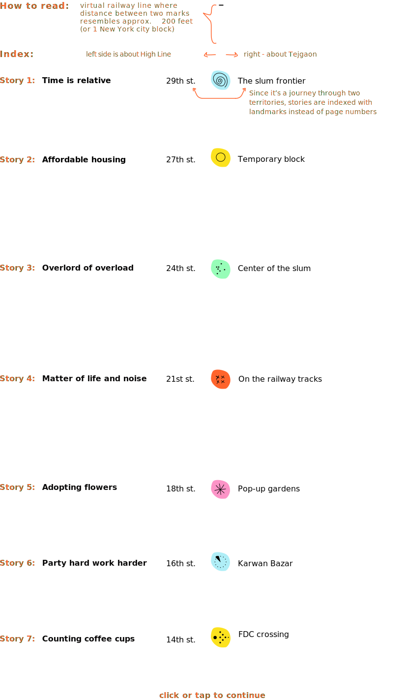

When people are back to traveling and living part of their lives outdoors again, they will start re-exploring cities. And while the world has gone digital, there will be a legacy of urban spaces that has even deeper meaning. The bigger the city the bigger the scene. The more stories to tell...
The High Line is a unique public park resembling a greenway along the old rail trail in New York, US. After decades of functioning as a freight railroad, then being dormant in disuse, the High Line was once designated for demolition. The community stood up to repurpose it instead, creating the park we see today. Since the opening in June 2009, the High Line has become an icon of contemporary landscape architecture that attracts more than 5 million visitors yearly.
Tejgaon slum stretches along active railways in Tejgaon district of Dhaka, Bangladesh. For decades people fleeing from poverty, natural disasters, and conflicts have been settling on free patches of land by the railway tracks. Daily at risk of being injured or killed by passing trains, watching their homes torn down by local authorities, they kept coming back. Public census says, in 2014 over 5,000 people lived in the Tejgaon area. Their stories go back a few generations: many of them were born in the slum, and have been staying ever since.
Tejgaon slum stretches along active railways in Tejgaon district of Dhaka, Bangladesh. For decades people fleeing from poverty, natural disasters, and conflicts have been settling on free patches of land by the railway tracks. Daily at risk of being injured or killed by passing trains, watching their homes torn down by local authorities, they kept coming back. Public census says, in 2014 over 5,000 people lived in the Tejgaon area. Their stories go back a few generations: many of them were born in the slum, and have been staying ever since.
A railway line became a symbol that both unites, and reveals disparity between two places. But what if a story, narrated by urban context and contrast, could bond people instead? What if the city becomes a scene to tell a story? And what if a story ends up with a real chance to help?
In April 2021 the Project Contrast team set up an experiment: two of us have simultaneously walked the High Line and Tejgaon Railway Slum. Having started from 30th and going upto 14th street at the High Line, and from the Tejgaon railway station upto Film Development Corporation (FDC) crossing in the slum, we both walked roughly the same distance of one mile (1.6 km). We talked to people around, marked the contrast and similarities of both places, collected data and anecdotes. Our observations sparked further research that turned into seven short stories. Each story is an exclamation of contrast revealing itself through the specific place in the park, or in the slum. It is an interactive journey along the (railway) line of both territories, side by side. You are welcome to take a tour!
In April 2021 the Project Contrast team set up an experiment: two of us have simultaneously walked the High Line and Tejgaon Railway Slum. Having started from 30th and going upto 14th street at the High Line, and from the Tejgaon railway station upto Film Development Corporation (FDC) crossing in the slum, we both walked roughly the same distance of one mile (1.6 km). We talked to people around, marked the contrast and similarities of both places, collected data and anecdotes. Our observations sparked further research that turned into seven short stories. Each story is an exclamation of contrast revealing itself through the specific place in the park, or in the slum. It is an interactive journey along the (railway) line of both territories, side by side. You are welcome to take a tour!
Mission
Project Contrast is visual and data-driven exploration of socio-economic disparity through a speculation with urban context. Based on two contrasting effects between the Tejgaon slum and the High Line: urban similarity (habitat along the railway line), and urban contrast (of living conditions), it draws attention to the problem of slums in general.
Project Contrast also explores the potential of data-driven donations. Through a simplified ‘cup-of-coffee’ scenario, it demonstrates how spending power of one person converts to quantifiable aid for several people. Project Contrast postulates a hypothesis: we can create more appealing humanitarian experiences, such as donations campaigns, with help of emotional design, storytelling and data.
This publication aims to test the narrative and prepare for the next step: real-life donation campaign at the High Line.
Project Contrast also explores the potential of data-driven donations. Through a simplified ‘cup-of-coffee’ scenario, it demonstrates how spending power of one person converts to quantifiable aid for several people. Project Contrast postulates a hypothesis: we can create more appealing humanitarian experiences, such as donations campaigns, with help of emotional design, storytelling and data.
This publication aims to test the narrative and prepare for the next step: real-life donation campaign at the High Line.
Design Principles
Project Contrast publication is not a traditional academic research paper, but also not a free-form creative project. It is shaped with a set of design principles in mind:
1. Respect towards Individuals and Collectives
Project Contrast is not an attempt to critique economic privileges of Western society, groups or individuals. It is not an attempt to coerce the High Line organization or visitors into a charity. Project Contrast is calling for awareness and compassion as an emotional response. Therefore, stories on both sides cross-reference each other, but do not imply any causality.
2. Sensible Speculation.
All seven stories included in Project Contrast are speculations with facts from the perspective of following a ‘cherry picking’ approach, for example, in Story 3. Overlord of Overload we did not take an average population density across neighborhoods within the High Line bound from census data, but deliberately selected blocks that comprise the same number of housing units as in Tejgaon slum. Not to be confused with misinformation, this project is a product of storytelling to reach better appeal, therefore interpretations of facts and context even though speculative, but truthful and making sense.
3. Data Humanism.
Data, being a central part of Project Contrast, is wrapped in a special visual form to compare what seems incomparable - a single entity with thousands of others (one apartment vs 50,000), or apples with oranges (flowers with eggplants in our case). Still representing quantitative data, Project Contrast steps away from common rules of data visualization, and relies on principles of Data Humanism coined by Giorgia Lupi, embracing its complexity, drawing it, making it about people.
1. Respect towards Individuals and Collectives
Project Contrast is not an attempt to critique economic privileges of Western society, groups or individuals. It is not an attempt to coerce the High Line organization or visitors into a charity. Project Contrast is calling for awareness and compassion as an emotional response. Therefore, stories on both sides cross-reference each other, but do not imply any causality.
2. Sensible Speculation.
All seven stories included in Project Contrast are speculations with facts from the perspective of following a ‘cherry picking’ approach, for example, in Story 3. Overlord of Overload we did not take an average population density across neighborhoods within the High Line bound from census data, but deliberately selected blocks that comprise the same number of housing units as in Tejgaon slum. Not to be confused with misinformation, this project is a product of storytelling to reach better appeal, therefore interpretations of facts and context even though speculative, but truthful and making sense.
3. Data Humanism.
Data, being a central part of Project Contrast, is wrapped in a special visual form to compare what seems incomparable - a single entity with thousands of others (one apartment vs 50,000), or apples with oranges (flowers with eggplants in our case). Still representing quantitative data, Project Contrast steps away from common rules of data visualization, and relies on principles of Data Humanism coined by Giorgia Lupi, embracing its complexity, drawing it, making it about people.
Research Team
Sofia Martynovich / project director, researcher for the High Line study (smartyno@pratt.edu)
Kayes Al Mihran / researcher for the Tejgaon slum study
Sofia Martynovich / project director, researcher for the High Line study (smartyno@pratt.edu)
Kayes Al Mihran / researcher for the Tejgaon slum study
Credits
Can Sucuoglu / academic research advisory
Zihao Liu / editorial
Shravan Mane / website framework
Can Sucuoglu / academic research advisory
Zihao Liu / editorial
Shravan Mane / website framework
approx.
200 ft
1 NYC street
1 min walk
200 ft
1 NYC street
1 min walk
N
S
S


we start here ->
The High Line, 30th st.
Tejgaon Railway Station
Time is relative
40 minutes
40 years
New York, New York! So famous for performative urban speculations! In the early 1930-es, when New York has formed in its major blocks to the city we see today, Samuel Lionel Rothafel, or “Roxy,” a showman and a primary advisor on the Radio City Music Hall project, was seriously considering to inject nitrous oxide - or laughing gas - into the air system of the music hall to immerse visitors in euphoria1. The lawyers talked Roxy out of this idea, however, did not stop him from adding ozone in the air instead. He got along with it for a while, actively publicizing the motto: “One visit to the Radio City Music Hall equals one month in the countryside”. The creators of the High Line did not have to spray anything in the air to start attracting more than 5 million visitors yearly. They turned a decay of industrial railways into a vibrant spot, a 40 minutes experience of walking through urban jungles.
1 - The New York Times, 1999
1 - The New York Times, 1999
An experience by the railways can turn into a life-long for someone like Anvar, who has been living in Tejgaon slum for 40 years since he was born. People fleeing from poverty, seasonal floods and refugee camps, ended up in Dhaka, the capital of Bangladesh, and have been settling there for decades. According to the public census2 in 2014 2.5 million people lived in slums all over Dhaka, 5,000 of them - in Tejgaon. Despite all the struggles, the Tejgaon slum residents found peace in their way of living. Until 3 years ago. When we came to Tejgaon to conduct our field study in April 2021, we were shocked: instead of the former community there were only a few temporary blocks left (ca. 500 people). We learned that since 2018, Tejgaon slum dwellers have been evicted several times3. Talking to Anvar, one of those who stuck around throughout evictions, we asked, why people still keep coming back. He said, most of them simply can not afford another place. And some, like him, truly believe that Tejgaon slum is their home.
2 - Slum population census, Bangladesh Bureau of Statistics, 2014
3 - BDNews24, 2021
2 - Slum population census, Bangladesh Bureau of Statistics, 2014
3 - BDNews24, 2021
Affordable home
1 apartment
homes for 50,000 families
Since the opening of the High Line in 2009 it’s ´halo effect´ has transformed real-estate values in surrounding blocks. Down the road between 28th and 27th street you won’t miss an exquisite residence by Zaha Hadid Architects design, where the price of one apartment can reach a few million dollars. Take the one for 12.5M$4, for example, it’s somewhat striking even by New York City standards. Wonder, what it converts to in places less financially saturated?
4 - The Residence website, 2021
4 - The Residence website, 2021
How about the entire country's low-income housing budget? Formed by the United Nations Development Program (UNDP), UK Aid, and Government of Bangladesh - National Urban Poverty Reduction Programme (NUPRP) within an estimated budget of 17M$ aims to provide housing to 70,000 low-income families across the country by 20255. Remember that apartment in the Residence for 12.5$? That basically covers almost 75% of NUPRP's budget, or converted into a human equivalent - homes for 50,000 families. This equation where one residential unit is worth 50,000 - nothing but a display of the world we live in, where the purchasing power of one person exceeds the basic needs of thousands of others.
5 - NUPRP report, 2016
5 - NUPRP report, 2016
Overlord of overload
NYC block
slum block
In his book Delirious New York, Rem Koolhaas, architect, urbanist and a founder of the Office of Metropolitan Architecture (OMA) describes Manhattan of 1920-1930es as an arena for testing boundaries of human density, a crib of the new radical lifestyle - Culture of Congestion6. What shapes the urban density, and how it manifests in people’s lives - those questions run through the curious mind of a city rambler. Driven by this idea of compare and contrast, we looked into public censuses for both cities, to find a place near the High Line that comprises the same amount of residential units as Tejgaon slum. We found two blocks between 23d, 25th streets, 9th and 10th avenue that embody roughly 1,500 apartments within a few dozen medium-rise buildings7.
6 - Rem Koolhaas, Delirious New York, 1978
7 - New York City housing census, 2010
Now imagine Rubik’s cube compressed into a matchbox, a flat one, those that usually are free in hotel lobbies. In 2014 Tejgaon slum resembled 1,500 households8 in the space roughly 15 times smaller than two New York blocks between 23d and 25th streets. Be it spatial closeness or common hardships, Tejgaon slum residents made up a very strong community, where everyone we talked to, knew how many people approximately live in the slum at the moment, and why their neighbours come and go. While Manhattan was getting its shape under control of mightful architectural thought, places like Tejgaon slum organically amalgamated within urban fabric, with their floating material structures, but solid social anatomy.
8 - Slum population census, Bangladesh Bureau of Statistics, 2014
8 - Slum population census, Bangladesh Bureau of Statistics, 2014
The matter of life & noise
helicoptes
trains
Once in a while the New York Post publishes a digest of things that annoy New Yorkers the most, compiled from the city complaints portal. Always spiced with a few peculiar cases, like illegal turtles, or incompetent beekiping, the main hardships, like helicopter noise, never change9. On the 23rd of January 2021, during one of my early discovery trips at the High Line I found myself at 21st street noticing another helicopter chopping Saturday bliss of New York’s sky. Retrospectively researched - NYC311 service portal10 received 22 helicopter noise complaints from around the High Line on that day, 23rd of January 2021, only.
9 - New York Post, 2018
10 - 311 city service portal, 2021
9 - New York Post, 2018
10 - 311 city service portal, 2021
For slum dwellers living along the operating railways the source of noise becomes the source of life threat at arm's length. Despite regular accidents, unregistered injuries and deaths, people use railway tracks to escape the tininess of their living spaces, to socialize, rest, or for kids to play. In peak hours trains pass through the Tejgaon slum area every 10 minutes, at night as well. Retrospectively researched across multiple schedules 11 - we counted 76 trains on that route on that day, 23rd of January 2021, only.
11 - Bangladesh railway train schedule, 2021
11 - Bangladesh railway train schedule, 2021
18th st., about food
Adopting flowers
echinacea plant
crate of eggplants
The ethos of the modern High Line from the inception was centered around urban ecologies. In 2003, marking the beginning of the project, Friends of the High Line, the operating company, hosted an open call for ideas of what could be in a place of abandoned railway tracks. After receiving hundreds of proposals, including some enthusiastic ones, like a public pool turning into a skating rink in winter, eventually the decision was made for the High Line to celebrate plants of all seasons. Today the park's horticulture resembles 400 species of plants and trees. A smart way of fundraising - the High Line offers a community to pitch in. Starting from 25$ one can adopt a plant12, become, for example, an echinacea flower stewart-in-residence.
12 - thehighline.org, 2021
12 - thehighline.org, 2021
Tejgaon slum dwellers had to become entrepreneurial about the land use. After the slum was demolished again and again, they organized pop-up gardens on the free patches of land here and there. Fertile Bangladeshi soil (the result of a major part of the country residing on the river delta) seems to be a great asset, even by the railway tracks. We were wondering, what is the value of the produce Tejgaon slum dwellers grow in their micro-gardens, compared to the High Line’s flora capital. Aesthetics aside, eggplants were something that we noticed in the gardens of Tejgaon. 25$ is a price for 77 lb (35 kg) of eggplants in Dhaka13. Dear statistician, whoever you are, don't judge me too fast for comparing “apples with oranges”. One flower vs 77 lb of food - isn't it a great metaphor of how far our societal systems of needs have grown apart?
13 - Price and wages index report, Bangladesh Bureau of Statistics, March 2021
13 - Price and wages index report, Bangladesh Bureau of Statistics, March 2021
Party hard work harder
party mode
work mode
What could be better than grabbing an ice cream on a hot summer day, and enjoying it slowly waking the High Line, or jumping into one of the parties at the Chelsea Market Passage on the 16th street. The High Line 2014 fact sheet reports14 : 76 000 gelatos were served throughout the year. Designed to be open and flexible - the park hosts hundreds of programs annually, from stargazing clubs to fitness classes to community meals. Throughout the day these oficial events share space with spontaneous unofficial interventions brought to the High Line by the public15 . Initially imagined to provide a modest boost to neighborhood growth, the High Line created the multitude of opportunities for local economies and communities.
14 - The High Line fact sheet, 2014
14 - The High Line fact sheet, 2014
15 - The High Line, James Corner Field Operations, Diller Scofidio & Renfro, 2020
Sadly, the local economy of Tejgaon is boosted by child labor. Working at garment workshops, truck stands, open-air markets in Tejgaon industrial area became the way for the slum kids to support their families that would not survive otherwise. What an irony - making candies and balloons at the factory, instead of having them for a birthday party16. Child labor remains a serious issue across the country and all demographics, but mostly concerns children from the slums. According to the Bangladesh Bureau of Statistics’s child labor survey conducted in 2013, monthly wage of underaged workers varies between 30 and 85$ 17. Here is the math: in Bangladesh, making hundreds of balloons daily, a kid would be getting approximately 30 cents per hour. Definitely not enough for an ice from Chelsea Market, but maybe for a plain balloon from a nearby kiosk?
16 - Tales by Light, S3/E1 “Children in need”, 2018
17 - Child labor survey, Bangladesh Bureau of Statistics, 2013
16 - Tales by Light, S3/E1 “Children in need”, 2018
17 - Child labor survey, Bangladesh Bureau of Statistics, 2013
Counting coffee cups
coffee to go
meal for an average family
Here we stand at 14th street, one of the High Line’s junctions with the rest of the world. Once predicted to attract 300,000 people annually, the park exceeded expectations exponentially, welcoming millions insead, turning into a cosmopolitan melange of locals, tourists, gallerists, executives, families, fashionistas, crumbling factories and new condo towers18. People are passing by, running, strolling, gazing. Most of them are holding coffee cups - a signature attribute of a New Yorker. One, two.. thirty five cups in half an hour. I was wondering, how many would I count, if I stayed there longer?
18 - The High Line, James Corner Field Operations, Diller Scofidio & Renfro, 2020
Preparing questionnaires for a field study in Tejgaon we included the following one “What is going to be your meal tonight, and whom will you share it with?” Only conducting the interviews did we realize how inconsiderate it was - most of the people had no idea what and if they were going to eat that night! On good days they would get biryani, a traditional mixed rice dish. It struck me after, when I was counting coffee cups at the High Line - seven portions of biryani, a meal for an average family in Tejgaon slum, would cost someone here just a single coffee-to-go.
placeholder
placeholder
placeholder
placeholder
placeholder
placeholder
placeholder
placeholder
placeholder
placeholder
placeholder
placeholder
placeholder
placeholder
placeholder
placeholder
placeholder
placeholder
placeholder
placeholder
DataVizStories 2021